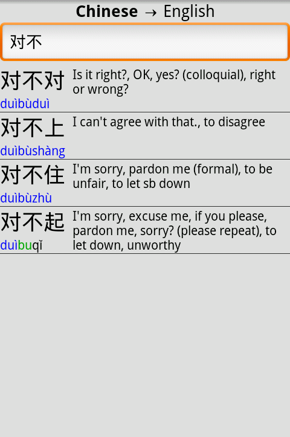

The dictionary let's you search for translations from Chinese to English or from English to Chinese, just tap on the top part to switch back and forth.
In the query field, you can type any Chinese word or character and it will give you the translations for that and all the words containing that sequence.
